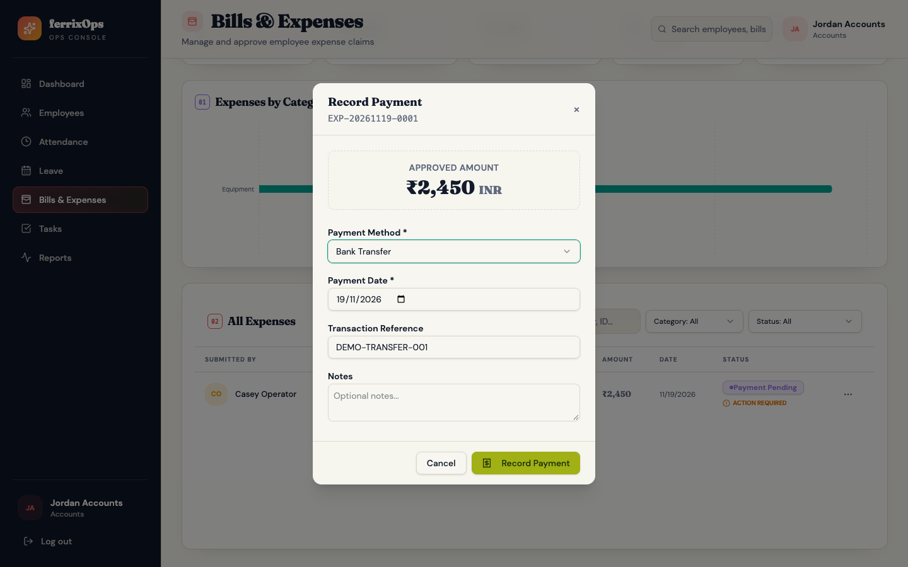

Manufacturing operations, built around clear approvals
FerrixOps brings employee administration, attendance, leave, expenses, and tasks into a single React application backed by Supabase Auth and PostgreSQL.
See how it was measuredExpense API latency
Mixed workload, median run-level p95
One expense, three roles
A synthetic ₹2,450 claim for a replacement torque wrench shows where each role hands off to the next.
-
Employee submits
The employee saves a draft, submits it, and tracks their own claim.
-
Accounts reviews
Accounts can approve, reject, or return a submitted claim with remarks.
-
Owner gives final approval
The claim enters Payment Pending once the Owner approves it.
-
Accounts records payment
The database records the external payment using the approved amount, marks the claim Paid, and writes the audit event in one transaction.


Task updates commit with their audit trail
React guides people to the actions for their role. PostgreSQL grants and row-level security govern the rows they can read. A PostgreSQL function handles the task status change in a single transaction.
When an assignee submits a task for review, the function looks up their role and locks
the task row with SELECT … FOR UPDATE. It checks the assignment and the
transition against the locked row, updates the status, and records the actor and before
and after states. An audit write failure aborts the transaction.
In the database regression suite, two simultaneous assignee requests trigger one successful transition. The second request sees the committed status after acquiring the lock and fails validation. A separate test forces an audit failure during task creation and verifies that the task insert rolls back.
Why the read policy got faster
An early index experiment showed no gain in its one completed pair. In the baseline plan, the expense read policies called a role lookup in the row filter even though the caller’s role did not depend on the row.
Evaluate the role once per statement
Wrapping the Owner and Accounts role lookups in scalar subqueries allowed PostgreSQL to evaluate them as InitPlans in the observed plans. Both variants used the same visibility rules and indexes.
Benchmark method
Five baseline and candidate pairs ran in a temporary local Supabase stack with alternating order. Both variants used the same synthetic dataset, a shared synthetic Owner identity across 20 virtual clients, and the same keyset-paginated queries through PostgREST. Each run had a 30-second warmup and five minutes of measurement. Each response was checked against expected data.
Independent recomputation verified the results from 260,351 requests with zero HTTP or response-correctness failures. These are measurements for the local query mix. The browser uses a different list query.
Deep pages took longer
All three deep-page query classes regressed. A workload with more deep-page reads could see a different result.
| Query | Baseline | Optimized |
|---|---|---|
| Unfiltered | 9.16 | 24.91 |
| Paid | 12.95 | 27.72 |
| Submitted by date | 12.73 | 27.12 |